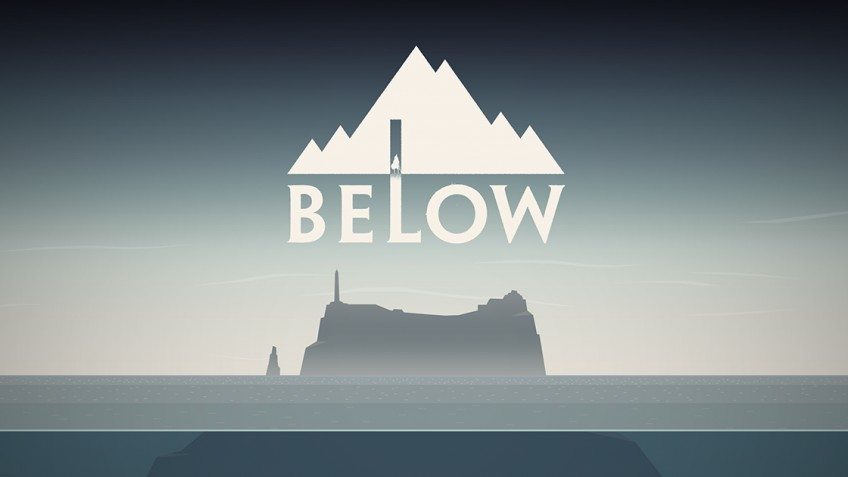

Final Fantasy VII Remake не делает ударов. История кажется законченной, поскольку она накапливается до фантастической финальной последовательности, в которой у меня заканчиваются комплименты. Эта игра - что-то удивительное, поэтому я с нетерпением жду следующего выпуска, так как думаю об игре снова. Легко понять, насколько уважительно и восхищенно относятся разработчики к этой истории и к этим персонажам во время каждой минуты этого приключения, которое затрудняло подавление, даже на минуту

Есть такая вещь, как слишком сложная, и оригинальная версия Below доказала это, но есть и такая вещь, как второй шанс, и режим Explore сумел превратить Below в игру, в которую может играть каждый, без ущерба для своего первоначального видения.
Resident Evil Resistance - это удивительно потрясающий топпер в своем базовом игровом пакете. Это одна из немногих многопользовательских игр, где командная работа действительно необходима. И не только это, но игра за Главного Разума - это действительно уникальный и вдохновляющий опыт. Доступный, многослойный и закачивающий кровь, это чудесная многопользовательская основа, которая будет только лучше.